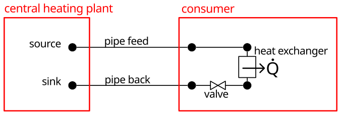
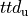

First steps¶
In this section we provide you with a very simple example as firsts steps in using TESPy. The model used in this introduction is shown the figure. It consists of a central heating plant and a consumer, represented by a heat exchanger with a control valve.

Figure: Topology of the simplest district heating system.¶
Set up a plant¶
In order to simulate a plant we start by creating a network
(tespy.networks.network.Network). The network is the main container
for the model. You need to specify a list of the fluids you require for the
calculation in your plant. For more information on the fluid properties go to
the corresponding section in TESPy
modules.
from tespy.networks import Network
# create a network object with water as fluid
fluid_list = ['water']
my_plant = Network(fluids=fluid_list)
On top of that, it is possible to specify a unit system and value ranges for the network’s variables. If you do not specify these, TESPy will use SI-units. The specification of the value range is used to improve convergence stability, in case you are dealing with fluid mixtures, e.g. using combustion. We will thus only specify the unit systems, in this case.
# set the unitsystem for temperatures to °C and for pressure to bar
my_plant.set_attr(T_unit='C', p_unit='bar', h_unit='kJ / kg')
Now you can start to create the components of the network.
Set up components¶
The list of components available can be found
here. If you set up a component you have
to specify a (within one network) unique label. Moreover, it is possible to
specify parameters for the component, for example power  for a turbine
or upper terminal temperature difference
for a turbine
or upper terminal temperature difference

of a heat exchanger. The full list of parameters for a specific component is stated in the respective class documentation. The example uses pipes, a control valve and a heat exchanger. The definition of the parameters available can be found here:Note
Parameters for components are generally optional. Only the component’s label is mandatory. If an optional parameter is not specified by the user, it will be a result of the plant’s simulation. This way, the set of equations a component returns is determined by which parameters you specify. You can find all equations in the components documentation as well.
from tespy.components import (
Sink, Source, Pipe, Valve, HeatExchangerSimple)
# sources & sinks (central heating plant)
so = Source('heat source output')
si = Sink('heat source input')
# consumer
cons = HeatExchangerSimple('consumer')
cons.set_attr(Q=-10000, pr=0.98) # Q in W
val = Valve('valve')
val.set_attr(pr=1) # pr - pressure ratio (output/input pressure)
# pipes
pipe_feed = Pipe('pipe_feed')
pipe_back = Pipe('pipe_back')
pipe_feed.set_attr(ks=0.0005, # pipe's roughness in meters
L=100, # length in m
D=0.06, # diameter in m
kA=10, # area independent heat transfer coefficient kA in W/K
Tamb=10) # ambient temperature of the pipe environment (ground temperature)
pipe_back.set_attr(ks=0.0005,
L=100,
D=0.06,
kA=10,
Tamb=10)
After creating the components the next step is to connect them in order to form your topological network.
Establish connections¶
Connections are used to link two components (outlet of component 1 to inlet of component 2: source to target). If two components are connected with each other the fluid properties at the source will be equal to the properties at the target. It is possible to set the properties on each connection in a similar way as parameters are set for components. The basic specification options are:
mass flow (m)
volumetric flow (v)
pressure (p)
enthalpy (h)
temperature (T)
a fluid vector (fluid)
Note
There are more specification options available. Please refer to
the connections section in the TESPy
modules chapter for detailed information. The specification options are
stated in the
connection class documentation, too:
tespy.connections.connection.Connection.
After creating the connections, we need to add them to the network. As the connections hold the information, which components are connected in which way, we do not need to pass the components to the network.
The connection parameters specified in the example case, are inlet and outlet temperature of the system as well as the inlet pressure. The pressure losses in the pipes, the consumer and the control valve determine the pressure at all other points of the network. The enthalpy is calculated from given temperature and heat losses in the pipes. Additionally we have to specify the fluid vector at one point in our network.
from tespy.connections import Connection
# connections of the disctrict heating system
so_pif = Connection(so, 'out1', pipe_feed, 'in1')
pif_cons = Connection(pipe_feed, 'out1', cons, 'in1')
cons_val = Connection(cons, 'out1', val, 'in1')
val_pib = Connection(val, 'out1', pipe_back, 'in1')
pib_si = Connection(pipe_back, 'out1', si, 'in1')
# this line is crutial: you have to add all connections to your network
my_plant.add_conns(so_pif, pif_cons, cons_val, val_pib, pib_si)
so_pif.set_attr(T=90, p=15, fluid={'water': 1})
cons_val.set_attr(T=60)
Start your calculation¶
After building your network, the components and the connections, add the following line at the end of your script and run it:
my_plant.solve(mode='design')
my_plant.print_results()
We highly recommend to check our step-by-step tutorial on how to set up a heat pump (see figure below) in TESPy. You will learn, how to set up and design a plant as well as calculate offdesign/partload performance.

Figure: Topology of a heat pump¶
Additional examples are provided in the examples section.
In order to get a good overview of the TESPy functionalities, the sections on the TESPy modules will guide you in detail.